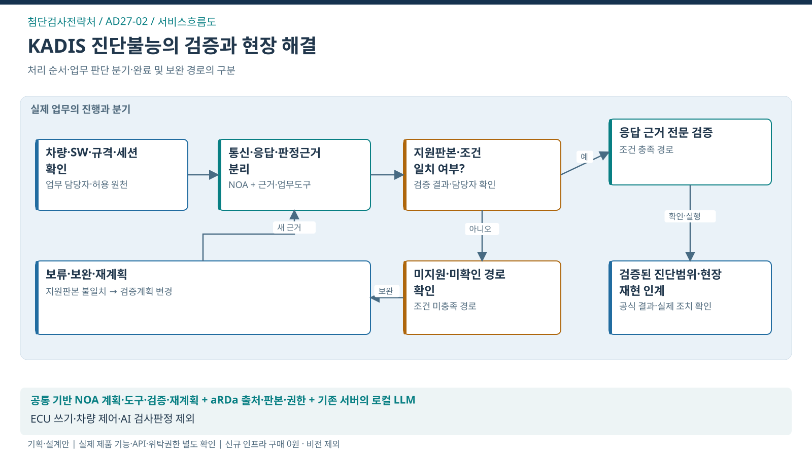

첨단검사전략처 / SERVICE FLOW
복합 진단불능의 검증과 현장 해결
진단불능 원인의 검증과 미확인 상태의 정확한 구분·현장 적용

처리의 대상
차량–ECU–프로그램–진단 세션
업무 전환
차량·프로그램·규격·세션의 적용조건 확인 → 통신 성공·미응답·정상·고장 판단의 근거 분리 → 승인된 자료조회·오프라인 대사 후 전문확인 인계 → 검증된 기술의 현장 재현과 잔여 한계 확인
완료의 기준
대상 판본·조건에서 확인한 진단범위와 한계가 전문 검증 및 현장 재현에 연결
이 서비스의 법정업무 기반
첨단검사전략처와 연결된 업무
법적 수행범위에서 출발하는 AX 제안
연결은 소관·예산권의 확정과 구분
- 자동차 정기·종합검사 ↗지정에 따른 검사대행
문제 근거와 기대편익
업무 근거: TS 공개업무 안내
해결할 문제 가설: 진단불능 사건에서 지원조건·판본·원천응답을 해석하고 다음 검증을 조직하는 부담이 있을 수 있음
수혜자: 수검자·민간검사소·제작기업
기대효과: 기관 — 미지원·미응답과 정상·고장의 오인 완화 / 수검자·검사소 — 진단불능 사건의 해결 가능성 개선
확인 지표: 진단불능 해결률·잘못된 정상/고장 안내·현장 재현 실패
기준값·목표 개선율: 현업 실증으로 확정
전문가 역할·제외범위·검증조건
전문 판단·실행: 전문가의 진단 검증과 검사원의 공식 검사판정
이번 과업 제외: ECU 쓰기·차량 제어·장비 펌웨어 변경·공식 검사판정의 AI 실행
선행 확인: 차량군 1개·복합 진단 유형·오프라인 재현 후 제한 현장
제품 역할은 적용안. TS 설치·성능·현업 효과의 검증 완료와 구분.